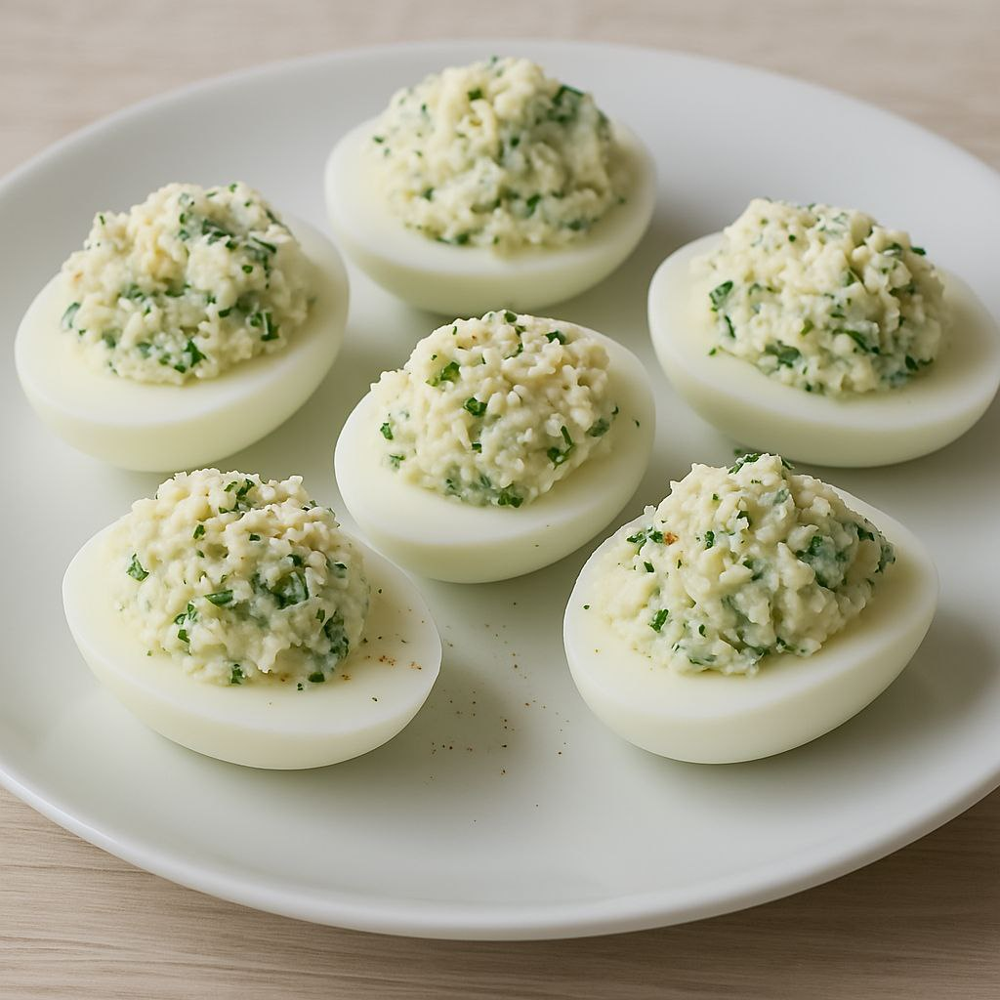

Cheese & Herb Stuffed Eggs
Cheese and Herb Stuffed Eggs are a light and tasty appetizer made by filling boiled egg whites with a creamy mixture of cheese, fresh herbs, and a touch of mayo. They're quick to prepare and perfect for parties, snacks, or a healthy bite.
View Full Recipe